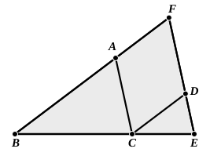
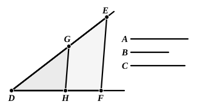
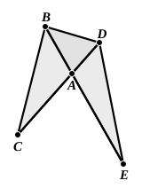
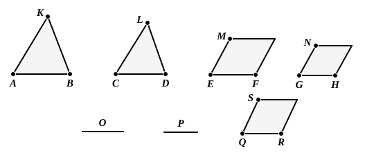
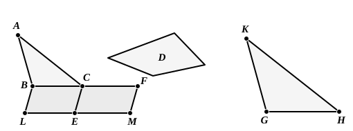
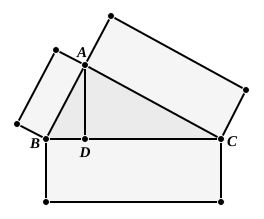

BOOK VI. PROPOSITIONS.¶
Proposition VI.1
Triangles and parallelograms which are under the same height are to one another as their bases.
Proposition VI.2
If a straight line be drawn parallel to one of the sides of a triangle, it will cut the sides of the triangle proportionally; and, if the sides of the triangle be cut proportionally, the line joining the points of section will be parallel to the remaining side of the triangle.
Proposition VI.3
If an angle of a triangle be bisected and the straight line cutting the angle cut the base also, the segments of the base will have the same ratio as the remaining sides of the triangle; and, if the segments of the base have the same ratio as the

Proposition VI.4
In equiangular triangles the sides about the equal angles are proportional, and those are corresponding sides which subtend the equal angles.
Proposition VI.5
If two triangles have their sides proportional, the triangles will be equiangular and will have those angles equal which the corresponding sides subtend.
Proposition VI.6
If two triangles have one angle equal to one angle and the sides about the equal angles proportional, the triangles will be equiangular and will have those angles equal which the corresponding sides subtend.
Proposition VI.7
If two triangles have one angle equal to one angle, the sides about other angles proportional, and the remaining angles either both less or both not less than a right angle, the triangles will be equiangular and will have those angles equal, the sides about which are proportional.
Proposition VI.8
If in a right-angled triangle a perpendicular be drawn from the right angle to the base, the triangles adjoining the perpendicular are similar both to the whole and to one another.
Proposition VI.9
From a given straight line to cut off a prescribed part.
Proposition VI.10
To cut a given uncut straight line similarly to a given cut straight line.
Proposition VI.11
To two given straight lines to find a third proportional.

Proposition VI.12
To three given straight lines to find a fourth proportional.
Proposition VI.13
To two given straight lines to find a mean proportional.
Proposition VI.14
In equal and equiangular parallelograms the sides about the equal angles are reciprocally proportional; and equiangular parallelograms in which the sides about the equal angles are reciprocally proportional are equal.

Proposition VI.15
In equal triangles which have one angle equal to one angle the sides about the equal angles are reciprocally proportional; and those triangles which have one angle equal to one angle, and in which the sides about the equal angles are reciprocally proportional, are equal.
Proposition VI.16
If four straight lines be proportional, the rectangle contained by the extremes is equal to the rectangle contained by the means; and, if the rectangle contained by the extremes be equal to the rectangle contained by the means, the four straight lines will be proportional.
Proposition VI.17
If three straight lines be proportional, the rectangle contained by the extremes is equal to the square on the mean; and, if the rectangle contained by the extremes be equal to the square on the mean, the three straight lines will be proportional.
Proposition VI.18
On a given straight line to describe a rectilinear figure similar and similarly situated to a given rectilinear figure.
Proposition VI.19
Similar triangles are to one another in the duplicate ratio of the corresponding sides.
Proposition VI.20
Similar polygons are divided into similar triangles, and into triangles equal in multitude and in the same ratio as the wholes, and the polygon has to the polygon a ratio duplicate of that which the corresponding side has to the corresponding side.
Proposition VI.21
Figures which are similar to the same rectilineal figure are also similar to one another.

Proposition VI.22
If four straight lines be proportional, the rectilineal figures similar and similarly described upon them will also be proportional; and, if the rectilineal figures similar and similarly described upon them be proportional, the straight lines will themselves also be proportional.
Proposition VI.23
Equiangular parallelograms have to one another the ratio compounded of the ratios of their sides.
Proposition VI.24
In any parallelogram the parallelograms about the diameter are similar both to the whole and to one another.

Proposition VI.25
To construct one and the same figure similar to a given rectilineal figure and equal to another given rectilineal figure.
Proposition VI.26
If from a parallelogram there be taken away a parallelogram similar and similarly situated to the whole and having a common angle with it, it is about the same diameter with the whole.
Proposition VI.27
Of all the parallelograms applied to the same straight line and deficient by parallelogrammic figures similar and similarly situated to that described on the half of the straight line, that parallelogram is greatest which is applied to the half of the straight line and is similar to the defect.
Proposition VI.28
To a given straight line to apply a parallelogram equal to a given rectilineal figure and deficient by a parallelogrammic figure similar to a given one : thus the given rectilineal figure must not be greater than the parallelogram described on the half of the straight line and similar to the defect.
Proposition VI.29
To a given straight line to apply a parallelogram equal to a given rectilineal figure and exceeding by a parallelogrammic figure similar to a given one.
Proposition VI.30
To cut a given finite straight line in extreme and mean ratio.

Proposition VI.31
In right-angled triangles the figure on the side subtending the right angle is equal to the similar and similarly described figures on the sides containing the right angle.
Proposition VI.32
If two triangles having two sides proportional to two sides be placed together at one angle so that their corresponding sides are also parallel, the remaining sides of the triangles will be in a straight line.
Proposition VI.33
In equal circles angles have the same ratio as the circumferences on which they stand, whether they stand at the centres or at the circumferences.